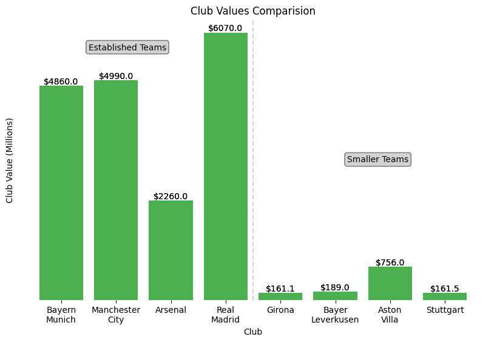
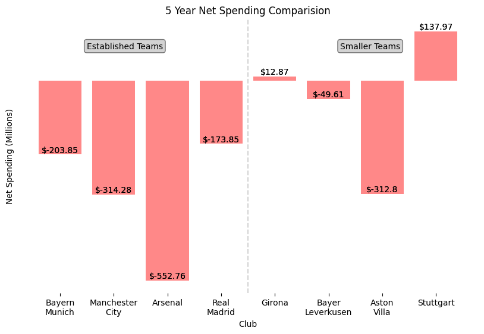

Historical Performances and Financial Comparasions
Historical Performances
This chart shows the position each team finished over the last 7 seasons and their current position so far this season.
It is important to note that if a team has a gap in their chart they have been relegated for the seasons they do not appear in
the chart. For example Girona was in the second division for the 2016/17, 2019/20, 2020/21, and 2021/22 seasons.
Finance Comparasions

This chart shows the difference in club value of the teams. Club value dictates
what types of coaches, staff, training facilities, and players a team can afford. The greater a club's value the more money they
are permitted to spend in the transfer market. The chart shows a vast divide between the big and small teams. It demonstrates
one of the reasons big clubs are able to perform at such a high level.

This chart shows the spending habits on new players of the 8 teams selected for our analysis.
It is can be seen that the established teams are able to spend more money on players without offloading their current players.
Smaller teams such as Stuttgart are not in positions where they can financially afford to spend on players without selling some of
their current players. In addition, smaller teams tend to be forced to sell their best players to established teams which is why
they struggle and often only find success when they are over performing.